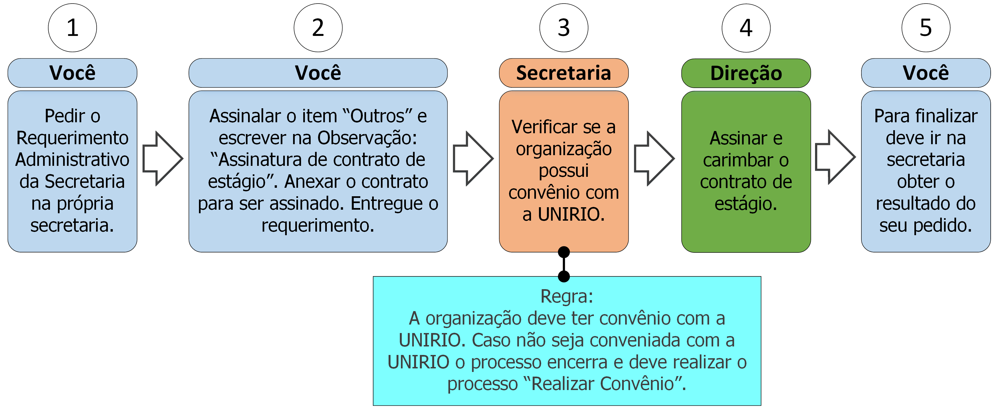

15.1 Assinatura de contrato de estágio

15.1.1 Descrição
Para que o estágio seja oficialmente reconhecido há a necessidade da assinatura do contrato pela UNIRIO a organização na qual ele estagia precisa ter convênio com a UNIRIO. Para isso deve seguir os seguintes passos:
- A. Peça o Requerimento Administrativo da Secretaria;
- B. Assinale o item “Outros” e preencha no campo Observação: “Assinatura de contrato de estágio”;
- C. Anexe os documentos necessários (ver documentos na seção 15.1.2) ao requerimento;
- D. Entregue o requerimento;
- E. A secretaria verificará se a organização possui convênio com a UNIRIO, caso não possua o processo será encerrado (ver regra 1 na seção 15.1.3);
- F. A direção assinará e carimbará o contrato;
- G. Vá à secretaria e procure saber sobre o resultado do seu requerimento (ver regra 2 na seção 15.1.3).
15.1.2 Documentos necessários
Contrato de estágio fornecido pela organização.
15.1.3 Regras
- 1. Convênio para contrato de estágio: Para que o contrato seja assinado a organização precisa ter convênio com a UNIRIO.
- 2. Prazo de efetivação: A Secretaria e a direção têm até 5 dias úteis para efetivar a assinatura do contrato de estágio.